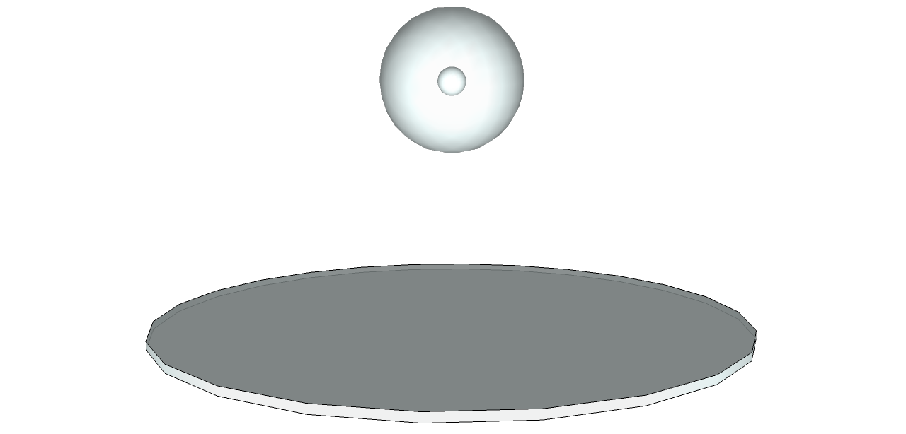
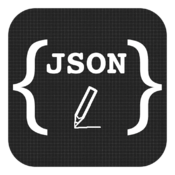
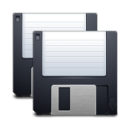
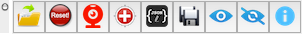
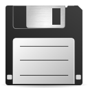

Description
"annotation_tool" is a plugin for SketchUp to manually set up a camera for a 3D model. The tool uses a SketchUp Component, called "nplab_camera", to mark where is the camera.

The component to mark the location of the focal point is called "nplab_target" and it looks like
The oldest version of this tool save the setting as a "TXT" file. The latest version still supports the "TXT" file. But it changes to use JSON file as the default output .
The basic workflow
- use tool to clear all setting
- use
 tool to set up the camera
tool to set up the camera
- use tool to set up focal points
- use  or  tool to save the setting
- repeat this process to set up another camera for the scene
Note that the tool requires that there is a single camera for a model. In order to set up more cameras for a model, you need to repeat the process. This means you need first save the current setting out, repeat the process and use the "save as" to save the new setting.
Tools
You can open the "Annotation" toolbar from the menu View->Tool Palettes-> Annotation.

|
- Load an existing camera setting from a file.
|
|
|
|
- Click the position where you want to put the camera. This tool will place an instance of compenent "nplab_camera" there.
- ESC to deactivate this tool.
|
|
- Select this tool. The view will change to the status - "looking around".
- Click the position that you want to pick as a focal point. This tool will add an instance of component "nplab_target" there.
| COMMAND + Mouse move |
rotate view around the camera |
| COMMAND + OPTION + Mouse move |
horizontally rotate the view around the camera |
| COMMAND + SHIFT + Mouse move |
vertically rotate the view around the camera |
| COMMAND + UP |
zoom out |
| COMMAND + DOWN |
zoom in |
| LEFT/RIGHT/UP/DOWN |
rotate left/right/up/down |
|
|  |
|
|
- Save the annotation to a file
|
|
- Show the camera and all focal points
|
|
- Hide the camera and all focal points
|
 |
- Show the information about the number of cameras and the number of focal points
|
Context Menu
The context menu item "Flip Camera" can be used to filp the camera vertically. Select the "nplab_camera " component, then right click mouse, you can see the following context menu: